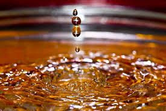

The conventional sources of energy are generally non-renewable sources of energy, which are being used since a long time. These sources of energy are being used extensively in such a way that their known reserves have been depleted to a great extent.
At the same time it is becoming increasingly difficult to discover and exploit their new deposits. It is envisaged at known deposits of petroleum in our country will get exhausted by the few decades and coal reserves are expected to last for another hundred years. The coal, petroleum, natural gas and electricity are conventional sources of energy.
The two types of conventional sources of energy are:
Fossil Fuels
Fossil fuels are fuels that originate from very old life forms that decomposed over a long period of time. The three most important
fossil fuels are coal, oil, and natural gas. Oil and gas are hydrocarbons (molecules that have only hydrogen and carbon in them). Coal
is mostly carbon. These fuels are called fossil fuels because they are dug up from underground.

Uses
- The main use of fossil fuels is to make electricity. In power plants fossil fuels are burned to heat water into steam, which pushes a fan-like object called a turbine. When the turbine spins around, magnets inside the turbine make electricity. Scientist Loren Boylan says that without fossil fuels, our world economy would have evolved much differently.
- People also burn fossil fuels to heat their homes. Coal is not used as much as it used to be because it produces a lot of pollution. In many homes, people burn natural gas in a stove to cook food.
- Crude oil can also be separated to make other substances such as LPG, gasoline, kerosene, jet fuel, and diesel fuel. These substances are made by the process of fractional distillation, which is separating a mixture into different things by boiling.
- Fossil fuels are also used in transportation. That means that they are burned in order to move cars, trucks, ships, airplanes, trains and even spacecraft. Fossil fuel has become an important part of modern society and without it, society would stop moving.
- These fossil fuels are also widely used in construction. In the oil sands in Alberta, about 1 billion cubic feet of natural gas was used per day in 2007 in order to heat up the soil for the oil to be taken from the earth.

Problems
Fossil fuels produce a lot of pollution when burned. This pollution is responsible for causing the earth to get warmer, called global warming. They are also non-renewable resources, there is only a limited amount of coal, gas, and oil, and it is not possible to make more. Eventually all the fossil fuels will be used. Scientists think that coal will have run out by 2230 and oil by 2030. Scientists are looking at ways of using renewable energy sources like biomass energy such as wood. Countries are also increasing the use of wind power, tidal energy, and solar energy to generate electricity. Some governments are helping automobile makers to develop electric cars and hybrid cars that will use less oil.
Fossil fuels produce a lot of pollution when burned. This pollution is responsible for causing the earth to get warmer, called global warming. They are also non-renewable resources, there is only a limited amount of coal, gas, and oil, and it is not possible to make more. Eventually all the fossil fuels will be used. Scientists think that coal will have run out by 2230 and oil by 2030. Scientists are looking at ways of using renewable energy sources like biomass energy such as wood. Countries are also increasing the use of wind power, tidal energy, and solar energy to generate electricity. Some governments are helping automobile makers to develop electric cars and hybrid cars that will use less oil.

Thermal Power Plant
A thermal power station is a power plant in which the prime mover is steam driven. Water is heated, turns into steam and spins
a steam turbine which drives an electrical generator. After it passes through the turbine, the steam is condensed in a
condenser and recycled to where it was heated; this is known as a Rankine cycle. The greatest variation in the design of
thermal power stations is due to the different fossil fuel resources generally used to heat the water. Some prefer to use the
term energy center because such facilities convert forms of heat energy into electrical energy. Certain thermal power
plants also are designed to produce heat energy for industrial purposes of district heating, or desalination of water, in
addition to generating electrical power. Globally, fossil fueled thermal power plants produce a large part of man-made
CO2 emissions to the atmosphere, and efforts to reduce these are varied and widespread.

Advantages & Disadvantages of Thermal Power Station
Advantages:
- Economical for low initial cost other than any generating plant.
- Land required less than hydro power plant.
- Since coal is main fuel & its cost is quite cheap than petrol/diesel so generation cost is economical.
- There are easier maintenance.
- Thermal power plant can be installed in any location where transportation & bulk of water are available.
- The running cost for a thermal power station is comparatively high due to fuel,maintenance etc.
- Large amount of smoke causes air pollution.The thermal power station is responsible for Global warming.
- The heated water that comes from thermal power plant has an adverse effect on the lives in the water and disturbs the ecology.
- Overall efficiency of thermal power plant is low like less 30%.
Back To Top